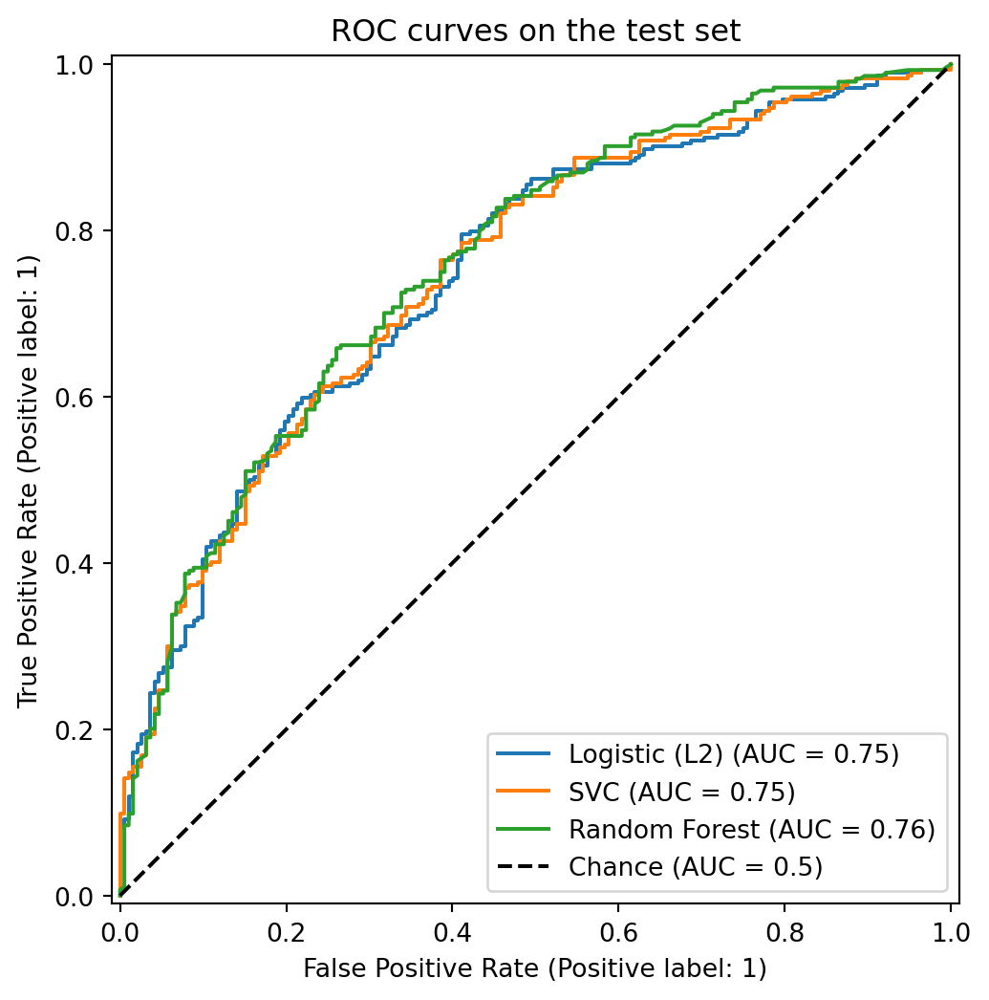
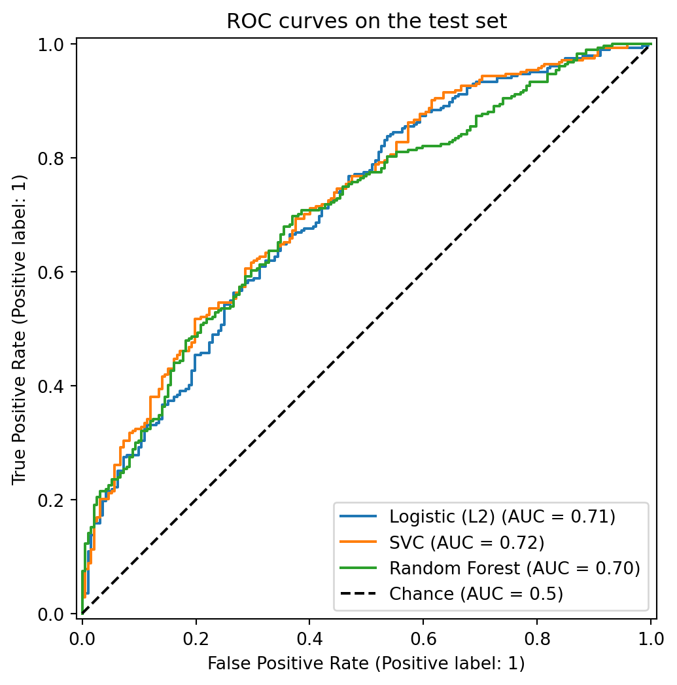
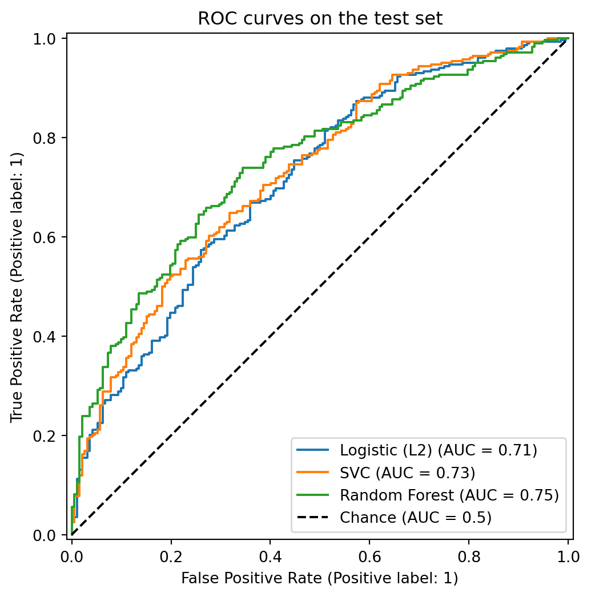
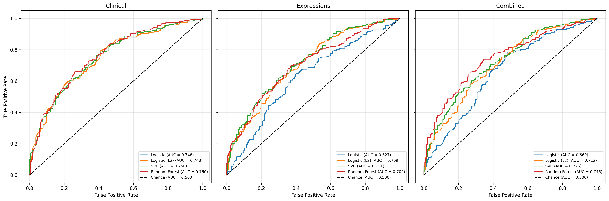
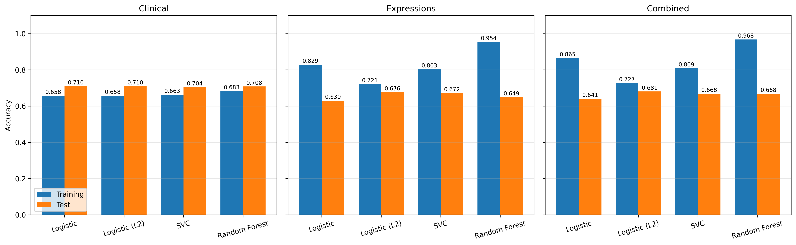
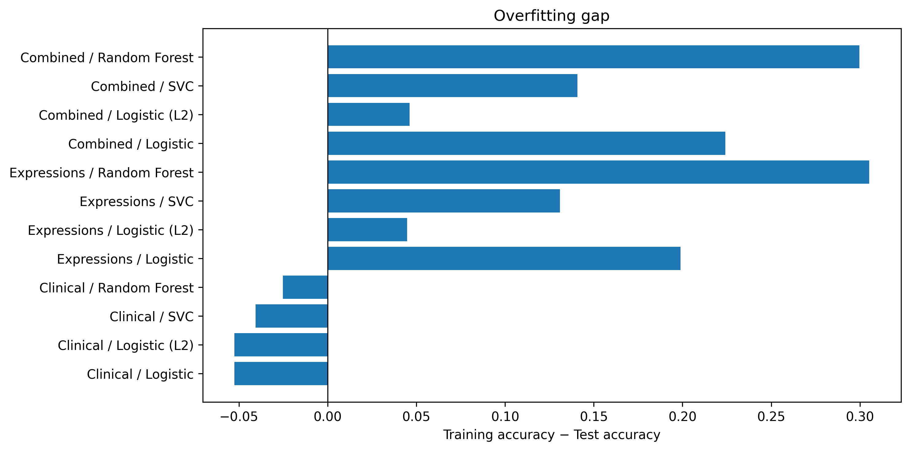

import mglearn
import pandas as pd
import numpy as np
import os
import joblib
import matplotlib.pyplot as plt
from sklearn.model_selection import train_test_split
from sklearn.preprocessing import MinMaxScaler
from sklearn.linear_model import LogisticRegression
from sklearn.metrics import roc_curve, roc_auc_score
from sklearn.ensemble import RandomForestClassifier
from sklearn.model_selection import GridSearchCV, StratifiedKFold
from sklearn.model_selection import cross_val_score, StratifiedKFold
from sklearn.svm import SVC
from sklearn.metrics import RocCurveDisplay3 Analysis
3.1 Data Preprocessing
Import data
data = pd.read_csv("./data/METABRIC_RNA_Mutation.csv")
clinical_documented_cols = data.columns[:31].tolist()
mutation_cols = [c for c in data.columns if c.lower().endswith("_mut")]
expression_cols = [
c for c in data.columns[31:]
if c not in mutation_cols
]Extract clinical, and expression data. We exclude exclude tumor stage because it have many missing values. We selected age_at_diagnosis, nottingham_prognostic_index categorical, er_status, her2_status, pr_status.
The nottingham_prognostic_index categorical is continuous data, so we convert it to categorical data, and then create dummy variables for it.
npi_cat = pd.cut(
data["nottingham_prognostic_index"],
bins=[-np.inf, 2.4, 3.4, 4.4, 5.4, np.inf],
labels=["excellent", "good", "moderate_1", "moderate_2", "poor"],
right=True,
)
npi_dummies = pd.get_dummies(npi_cat, prefix="npi", dtype=int)
npi_dummies.head()| npi_excellent | npi_good | npi_moderate_1 | npi_moderate_2 | npi_poor | |
|---|---|---|---|---|---|
| 0 | 0 | 0 | 0 | 0 | 1 |
| 1 | 0 | 0 | 1 | 0 | 0 |
| 2 | 0 | 0 | 1 | 0 | 0 |
| 3 | 0 | 0 | 1 | 0 | 0 |
| 4 | 0 | 0 | 0 | 0 | 1 |
The status variables are categorical, so we create binary variables for them.
data[["er_status", "pr_status", "her2_status"]] = data[["er_status", "pr_status", "her2_status"]].replace({"Negative": 0, "Positive": 1})
data[["er_status", "pr_status", "her2_status"]].head()| er_status | pr_status | her2_status | |
|---|---|---|---|
| 0 | 1 | 0 | 0 |
| 1 | 1 | 1 | 0 |
| 2 | 1 | 1 | 0 |
| 3 | 1 | 1 | 0 |
| 4 | 1 | 1 | 0 |
Select the clinical variables variables.
selected_clinical = ["age_at_diagnosis", "er_status", "pr_status", "her2_status"]
## combine the selected clinical variables and NPI dummies into a single dataframe
X = pd.concat([data[selected_clinical], npi_dummies], axis=1)The outcome are overall survival, which is a binary variable. But it is currently coded as 1 for survived and 0 for died. We create a new variable surv that is 0 if the patient survived and 1 if the patient died.
data["surv"] = np.where(data["overall_survival"] == 1, 0, 1)
## select the binary outcome
Y = data["surv"]Training and testing split
## split the data into training and testing sets
X_train, X_test, y_train, y_test = train_test_split(X, Y, random_state=0)However, the age_at_diagnosis variable is continuous, and the other variables are binary. We need to normalize the continuous variable. So we slect min-max normalization to scale the age_at_diagnosis variable to the range [0, 1].
Before scaling
print("Min age at diagnosis:", X_train["age_at_diagnosis"].min(), "Max age at diagnosis:", X_train["age_at_diagnosis"].max())Min age at diagnosis: 21.93 Max age at diagnosis: 96.29Scaling
scaler = MinMaxScaler()
X_train = X_train.copy()
X_test = X_test.copy()
X_train[["age_at_diagnosis"]] = scaler.fit_transform(X_train[["age_at_diagnosis"]])
X_test[["age_at_diagnosis"]] = scaler.transform(X_test[["age_at_diagnosis"]]) After scaling
print("Min age at diagnosis:", X_train["age_at_diagnosis"].min(), "Max age at diagnosis:", X_train["age_at_diagnosis"].max())Min age at diagnosis: 0.0 Max age at diagnosis: 0.99999999999999983.2 Model with clinical variables
3.2.1 Logistic Regression
## fit logistic regression model
logistic_clinical = LogisticRegression(penalty= None).fit(X_train, y_train)Mean accuracy on the training and testing sets
print('Training Accuracy :',logistic_clinical.score(X_train, y_train))
print('Test Accuracy :',logistic_clinical.score(X_test, y_test))Training Accuracy : 0.657563025210084
Test Accuracy : 0.7100840336134454ROC-AUC score on the testing sets
y_prob = logistic_clinical.predict_proba(X_test)[:, 1] # probability of the positive class
auc = roc_auc_score(y_test, y_prob)
print(f"Test ROC-AUC: {auc:.3f}")Test ROC-AUC: 0.7483.2.2 Lasso Regression
In Lasso regression, we use 5-fold cross-validation to select the best regularization parameter.
cv = StratifiedKFold(n_splits=5, shuffle=True, random_state=123)
C_values = [0.001, 0.01, 0.1, 1, 10, 100]
results = {}
for C in C_values:
model = LogisticRegression(penalty='l2', C=C, max_iter=10000)
scores = cross_val_score(model, X_train, y_train, cv=cv, scoring="roc_auc")
results[C] = scores
print(f"C={C:<7} | fold accuracies: {scores.round(3)} | mean: {scores.mean():.3f}")
best_C = max(results, key=lambda c: results[c].mean())
print("Best C by mean CV accuracy:", best_C)C=0.001 | fold accuracies: [0.636 0.638 0.589 0.638 0.623] | mean: 0.625
C=0.01 | fold accuracies: [0.65 0.649 0.606 0.669 0.632] | mean: 0.641
C=0.1 | fold accuracies: [0.69 0.664 0.652 0.731 0.668] | mean: 0.681
C=1 | fold accuracies: [0.694 0.656 0.672 0.743 0.693] | mean: 0.692
C=10 | fold accuracies: [0.693 0.655 0.674 0.745 0.697] | mean: 0.693
C=100 | fold accuracies: [0.694 0.655 0.675 0.746 0.697] | mean: 0.693
Best C by mean CV accuracy: 100So we choose C = 100 as the best regularization parameter. We fit the model with the best regularization parameter and evaluate the model on the training and testing sets.
logistic_clinical_l2 = LogisticRegression(penalty='l2', C=best_C, max_iter=10000).fit(X_train, y_train)
print('Training Accuracy :',logistic_clinical_l2.score(X_train, y_train))
print('Test Accuracy :',logistic_clinical_l2.score(X_test, y_test))Training Accuracy : 0.657563025210084
Test Accuracy : 0.7100840336134454ROC-AUC score on the testing sets
y_prob = logistic_clinical_l2.predict_proba(X_test)[:, 1] # probability of the positive class
auc = roc_auc_score(y_test, y_prob)
print(f"Test ROC-AUC: {auc:.3f}")Test ROC-AUC: 0.7483.2.3 Random Forest
We used 5-fold cross-validation to select the best hyperparameters for the random forest model. We used a grid search to search over a range of hyperparameters, including the number of trees in the forest (n_estimators), the maximum depth of the trees (max_depth), and the minimum number of samples required to split an internal node (min_samples_split), number of samples required to be at a leaf node (min_samples_leaf).
model_path = "models/rf_grid_search.joblib"
if os.path.exists(model_path):
grid_search = joblib.load(model_path)
else:
cv = StratifiedKFold(n_splits=5, shuffle=True, random_state=123)
rf = RandomForestClassifier(random_state=123)
param_grid = {
"max_depth": [5, 10, 15],
"min_samples_leaf": [2, 5, 10, 20],
"min_samples_split": [5, 10, 20],
"n_estimators": range(10, 101, 10),
}
grid_search = GridSearchCV(
estimator=rf,
param_grid=param_grid,
cv=cv,
scoring="roc_auc",
return_train_score=True,
n_jobs=-1,
)
grid_search.fit(X_train, y_train)
joblib.dump(grid_search, model_path) Best hyperparameters
print("Best parameters:", grid_search.best_params_)Best parameters: {'max_depth': 5, 'min_samples_leaf': 5, 'min_samples_split': 5, 'n_estimators': 90}Perfromance of random forest model with clinical variables on the training and testing sets
rf_clinical = grid_search.best_estimator_
print("Training accuracy:", rf_clinical.score(X_train, y_train))
print("Test accuracy:", rf_clinical.score(X_test, y_test))Training accuracy: 0.6827731092436975
Test accuracy: 0.707983193277311ROC-AUC score on the testing sets
y_prob = rf_clinical.predict_proba(X_test)[:, 1] # probability of the positive class
auc = roc_auc_score(y_test, y_prob)
print(f"Test ROC-AUC: {auc:.3f}")Test ROC-AUC: 0.7603.2.4 Support Vector Machine
We used 5-fold cross-validation to select the best hyperparameters for the support vector machine model. We used a grid search to search over a range of hyperparameters, including the regularization parameter (C), and the gamma type (gamma).
svc_path = "models/svc_grid_search.joblib"
if os.path.exists(svc_path):
grid_search_svc = joblib.load(svc_path)
else:
param_grid = {
"C": [0.001, 0.01, 0.1, 1, 10, 100],
"gamma": [0.001, 0.01, 0.1, 1, 10, 100],
}
grid_search_svc = GridSearchCV(
SVC(), param_grid, cv=5, scoring="roc_auc",
return_train_score=True
)
grid_search_svc.fit(X_train, y_train)
joblib.dump(grid_search_svc, svc_path)Best hyperparameters
print("Best parameters:", grid_search_svc.best_params_)Best parameters: {'C': 100, 'gamma': 0.01}Performance of support vector machine model with clinical variables on the training and testing sets
print("Best ROC-AUC score:", grid_search_svc.best_score_)
print("Test set score:", grid_search_svc.score(X_test, y_test))Best ROC-AUC score: 0.6958385529832076
Test set score: 0.7504951584507042ROC-AUC score on the testing sets
svc_clinical = grid_search_svc.best_estimator_
y_score = svc_clinical.decision_function(X_test)
auc = roc_auc_score(y_test, y_score)
print(f"Test ROC-AUC: {auc:.3f}")Test ROC-AUC: 0.750models = {
"Logistic (L2)": logistic_clinical_l2,
"SVC": svc_clinical,
"Random Forest": rf_clinical,
}
fig, ax = plt.subplots(figsize=(7, 6))
for name, model in models.items():
RocCurveDisplay.from_estimator(model, X_test, y_test, ax=ax, name=name)
ax.plot([0, 1], [0, 1], "k--", label="Chance (AUC = 0.5)")
ax.legend(loc="lower right")
ax.set_title("ROC curves on the test set")
plt.show()
3.3 Model with gene expression variables
Data extraction
X_expressions = data[expression_cols]
## split the expression data into training and testing sets
X_expression_train, X_expression_test = train_test_split(X_expressions, random_state=0)3.3.1 Logistic Regression
logistic_expression = LogisticRegression(penalty=None, max_iter=10000).fit(X_expression_train, y_train)print('Training Accuracy :',logistic_expression.score(X_expression_train, y_train))
print('Test Accuracy :',logistic_expression.score(X_expression_test, y_test))Training Accuracy : 0.8291316526610645
Test Accuracy : 0.6302521008403361y_prob = logistic_expression.predict_proba(X_expression_test)[:, 1]
auc = roc_auc_score(y_test, y_prob)
print(f"Test ROC-AUC: {auc:.3f}")Test ROC-AUC: 0.6273.3.2 Lasso Regression
cv = StratifiedKFold(n_splits=5, shuffle=True, random_state=123)
C_values = [0.001, 0.01, 0.1, 1, 10, 100]
results = {}
for C in C_values:
model = LogisticRegression(penalty='l2', C=C, max_iter=10000)
scores = cross_val_score(model, X_expression_train, y_train, cv=cv, scoring="roc_auc")
results[C] = scores
print(f"C={C:<7} | fold accuracies: {scores.round(3)} | mean: {scores.mean():.3f}")
best_C = max(results, key=lambda c: results[c].mean())
print("Best C by mean CV accuracy:", best_C)C=0.001 | fold accuracies: [0.634 0.726 0.648 0.655 0.667] | mean: 0.666
C=0.01 | fold accuracies: [0.635 0.645 0.616 0.658 0.647] | mean: 0.641
C=0.1 | fold accuracies: [0.592 0.574 0.582 0.63 0.614] | mean: 0.598
C=1 | fold accuracies: [0.558 0.543 0.565 0.603 0.604] | mean: 0.575
C=10 | fold accuracies: [0.543 0.531 0.558 0.595 0.602] | mean: 0.566
C=100 | fold accuracies: [0.541 0.53 0.556 0.591 0.603] | mean: 0.564
Best C by mean CV accuracy: 0.001logistic_expression_l2 = LogisticRegression(penalty='l2', C=best_C, max_iter=10000).fit(X_expression_train, y_train)
print('Mean Training Accuracy :',logistic_expression_l2.score(X_expression_train, y_train))
print('Mean Test Accuracy :',logistic_expression_l2.score(X_expression_test, y_test))Mean Training Accuracy : 0.7212885154061625
Mean Test Accuracy : 0.6764705882352942y_prob = logistic_expression_l2.predict_proba(X_expression_test)[:, 1] # probability of the positive class
auc = roc_auc_score(y_test, y_prob)
print(f"Test ROC-AUC: {auc:.3f}")Test ROC-AUC: 0.7093.3.3 Random Forest
rf_ex_path = "models/rf__ex_grid_search.joblib"
if os.path.exists(rf_ex_path):
grid_search = joblib.load(rf_ex_path)
else:
cv = StratifiedKFold(n_splits=5, shuffle=True, random_state=123)
rf = RandomForestClassifier(random_state=123)
param_grid = {
"max_depth": [5, 10, 15],
"min_samples_leaf": [2, 5, 10, 20],
"min_samples_split": [5, 10, 20],
"n_estimators": range(10, 101, 10),
}
grid_search = GridSearchCV(
estimator=rf,
param_grid=param_grid,
cv=cv,
scoring="roc_auc",
return_train_score=True,
n_jobs=-1,
)
grid_search.fit(X_expression_train, y_train)
joblib.dump(grid_search, rf_ex_path) print("Best parameters:", grid_search.best_params_)Best parameters: {'max_depth': 15, 'min_samples_leaf': 10, 'min_samples_split': 5, 'n_estimators': 60}rf_expression = grid_search.best_estimator_
print("Training accuracy:", rf_expression.score(X_expression_train, y_train))
print("Test accuracy:", rf_expression.score(X_expression_test, y_test))Training accuracy: 0.9544817927170869
Test accuracy: 0.6491596638655462y_prob = rf_expression.predict_proba(X_expression_test)[:, 1] # probability of the positive class
auc = roc_auc_score(y_test, y_prob)
print(f"Test ROC-AUC: {auc:.3f}")Test ROC-AUC: 0.7043.3.4 Support Vector Machine
svc_ex_path = "models/svc_ex_grid_search.joblib"
if os.path.exists(svc_ex_path):
grid_search_svc = joblib.load(svc_ex_path)
else:
param_grid = {
"C": [0.001, 0.01, 0.1, 1, 10, 100],
"gamma": [0.001, 0.01, 0.1, 1, 10, 100],
}
grid_search_svc = GridSearchCV(
SVC(), param_grid, cv=5, scoring="roc_auc",
return_train_score=True
)
grid_search_svc.fit(X_expression_train, y_train)
joblib.dump(grid_search_svc, svc_ex_path)print("Best parameters:", grid_search_svc.best_params_)Best parameters: {'C': 1, 'gamma': 0.001}print("Best ROC-AUC score:", grid_search_svc.best_score_)
print("Test set score:", grid_search_svc.score(X_expression_test, y_test))Best ROC-AUC score: 0.6752074959703286
Test set score: 0.7214275234741783svc_expression = grid_search_svc.best_estimator_
y_score = svc_expression.decision_function(X_expression_test)
auc = roc_auc_score(y_test, y_score)
print(f"Test ROC-AUC: {auc:.3f}")Test ROC-AUC: 0.721Visualization
models = {
"Logistic (L2)": logistic_expression_l2,
"SVC": svc_expression,
"Random Forest": rf_expression,
}
fig, ax = plt.subplots(figsize=(7, 6))
for name, model in models.items():
RocCurveDisplay.from_estimator(model, X_expression_test, y_test, ax=ax, name=name)
ax.plot([0, 1], [0, 1], "k--", label="Chance (AUC = 0.5)")
ax.legend(loc="lower right")
ax.set_title("ROC curves on the test set")
plt.show()
3.4 Model with clinical and gene expression variables
Data extraction
X_combined_train = pd.concat([X_train, X_expression_train], axis=1)
X_combined_test = pd.concat([X_test, X_expression_test], axis=1)3.4.1 Logistic Regression
logistic_combined = LogisticRegression(penalty=None, max_iter=10000).fit(X_combined_train, y_train)print('Mean Training Accuracy :',logistic_combined.score(X_combined_train, y_train))
print('Mean Test Accuracy :',logistic_combined.score(X_combined_test, y_test))Mean Training Accuracy : 0.8648459383753502
Mean Test Accuracy : 0.64075630252100853.4.2 Lasso Regression
cv = StratifiedKFold(n_splits=5, shuffle=True, random_state=123)
C_values = [0.001, 0.01, 0.1, 1, 10, 100]
results = {}
for C in C_values:
model = LogisticRegression(penalty='l2', C=C, max_iter=10000)
scores = cross_val_score(model, X_combined_train, y_train, cv=cv, scoring="roc_auc")
results[C] = scores
print(f"C={C:<7} | fold accuracies: {scores.round(3)} | mean: {scores.mean():.3f}")
best_C = max(results, key=lambda c: results[c].mean())
print("Best C by mean CV accuracy:", best_C)C=0.001 | fold accuracies: [0.637 0.727 0.65 0.658 0.668] | mean: 0.668
C=0.01 | fold accuracies: [0.646 0.652 0.622 0.667 0.652] | mean: 0.648
C=0.1 | fold accuracies: [0.615 0.59 0.597 0.651 0.622] | mean: 0.615
C=1 | fold accuracies: [0.603 0.569 0.586 0.635 0.618] | mean: 0.602
C=10 | fold accuracies: [0.594 0.564 0.585 0.63 0.622] | mean: 0.599
C=100 | fold accuracies: [0.594 0.556 0.587 0.63 0.609] | mean: 0.595
Best C by mean CV accuracy: 0.001logistic_combined_l2 = LogisticRegression(penalty='l2', C=best_C, max_iter=10000).fit(X_combined_train, y_train)
print('Mean Training Accuracy :',logistic_combined_l2.score(X_combined_train, y_train))
print('Mean Test Accuracy :',logistic_combined_l2.score(X_combined_test, y_test))Mean Training Accuracy : 0.726890756302521
Mean Test Accuracy : 0.680672268907563y_prob = logistic_combined_l2.predict_proba(X_combined_test)[:, 1] # probability of the positive class
auc = roc_auc_score(y_test, y_prob)
print(f"Test ROC-AUC: {auc:.3f}")Test ROC-AUC: 0.7123.4.3 Random forest
rf_combined_path = "models/rf_combined_grid_search.joblib"
if os.path.exists(rf_combined_path):
grid_search = joblib.load(rf_combined_path)
else:
cv = StratifiedKFold(n_splits=5, shuffle=True, random_state=123)
rf = RandomForestClassifier(random_state=123)
param_grid = {
"max_depth": [5, 10, 15],
"min_samples_leaf": [2, 5, 10, 20],
"min_samples_split": [5, 10, 20],
"n_estimators": range(10, 101, 10),
}
grid_search = GridSearchCV(
estimator=rf,
param_grid=param_grid,
cv=cv,
scoring="roc_auc",
return_train_score=True,
n_jobs=-1,
)
grid_search.fit(X_combined_train, y_train)
joblib.dump(grid_search, rf_combined_path) print("Best parameters:", grid_search.best_params_)Best parameters: {'max_depth': 10, 'min_samples_leaf': 5, 'min_samples_split': 20, 'n_estimators': 100}rf_combined = grid_search.best_estimator_
print("Training accuracy:", rf_combined.score(X_combined_train, y_train))
print("Test accuracy:", rf_combined.score(X_combined_test, y_test))Training accuracy: 0.9677871148459384
Test accuracy: 0.6680672268907563y_prob = rf_combined.predict_proba(X_combined_test)[:, 1] # probability of the positive class
auc = roc_auc_score(y_test, y_prob)
print(f"Test ROC-AUC: {auc:.3f}")Test ROC-AUC: 0.7463.4.4 Support Vector Machine
svc_combined_path = "models/svc_combined_grid_search.joblib"
if os.path.exists(svc_combined_path):
grid_search_svc = joblib.load(svc_combined_path)
else:
param_grid = {
"C": [0.001, 0.01, 0.1, 1, 10, 100],
"gamma": [0.001, 0.01, 0.1, 1, 10, 100],
}
grid_search_svc = GridSearchCV(
SVC(), param_grid, cv=5, scoring="roc_auc",
return_train_score=True
)
grid_search_svc.fit(X_combined_train, y_train)
joblib.dump(grid_search_svc, svc_combined_path)print("Best parameters:", grid_search_svc.best_params_)Best parameters: {'C': 1, 'gamma': 0.001}print("Best ROC-AUC score:", grid_search_svc.best_score_)
print("Test set score:", grid_search_svc.score(X_combined_test, y_test))Best ROC-AUC score: 0.6777717894234588
Test set score: 0.7262507335680751svc_combined = grid_search_svc.best_estimator_
y_score = svc_combined.decision_function(X_combined_test)
auc = roc_auc_score(y_test, y_score)
print(f"Test ROC-AUC: {auc:.3f}")Test ROC-AUC: 0.726Visualization
models = {
"Logistic (L2)": logistic_combined_l2,
"SVC": svc_combined,
"Random Forest": rf_combined,
}
fig, ax = plt.subplots(figsize=(7, 6))
for name, model in models.items():
RocCurveDisplay.from_estimator(model, X_combined_test, y_test, ax=ax, name=name)
ax.plot([0, 1], [0, 1], "k--", label="Chance (AUC = 0.5)")
ax.legend(loc="lower right")
ax.set_title("ROC curves on the test set")
plt.show()
3.5 Comparision between 3 models
3.5.1 ROC-AUC
def get_score(model, X):
"""Return continuous scores for ROC, aligning X to the columns the model was fit on."""
# reorder/select test columns to exactly match training columns (fixes name/order errors)
if isinstance(X, pd.DataFrame) and hasattr(model, "feature_names_in_"):
X = X[list(model.feature_names_in_)]
# prefer decision_function (logistic, SVC); fall back to predict_proba (random forest)
if hasattr(model, "decision_function"):
return model.decision_function(X)
return model.predict_proba(X)[:, 1]
def plot_roc_facets(facets, y, figsize=(18, 6)):
fig, axes = plt.subplots(1, len(facets), figsize=figsize, sharey=True)
axes = [axes] if len(facets) == 1 else axes
for ax, (title, (models, X)) in zip(axes, facets.items()):
for name, model in models.items():
try:
score = get_score(model, X)
except Exception as e:
raise RuntimeError(f"Failed on facet '{title}', model '{name}': {e}") from e
fpr, tpr, _ = roc_curve(y, score)
auc = roc_auc_score(y, score)
ax.plot(fpr, tpr, label=f"{name} (AUC = {auc:.3f})")
ax.plot([0, 1], [0, 1], "k--", label="Chance (AUC = 0.500)")
ax.set(title=title, xlabel="False Positive Rate")
ax.legend(loc="lower right", fontsize=8)
ax.grid(alpha=0.3)
axes[0].set_ylabel("True Positive Rate")
plt.tight_layout()
return fig
facets = {
"Clinical": (
{"Logistic": logistic_clinical, "Logistic (L2)": logistic_clinical_l2, "SVC": svc_clinical, "Random Forest": rf_clinical},
X_test,
),
"Expressions": (
{"Logistic": logistic_expression, "Logistic (L2)": logistic_expression_l2, "SVC": svc_expression, "Random Forest": rf_expression},
X_expression_test,
),
"Combined": (
{"Logistic": logistic_combined, "Logistic (L2)": logistic_combined_l2, "SVC": svc_combined, "Random Forest": rf_combined},
X_combined_test,
),
}
fig = plot_roc_facets(facets, y_test)
fig.savefig("./figs/roc_facets.png", dpi=300, bbox_inches="tight")
plt.close(fig)
Note
Clinical only models are better than gene expression only and combined models
Combined model still not increase the prediction performance: AUC of combined random forest is 0.746, while RF of clinical is 0.76
3.5.2 Score
# (model, train features, test features) for each combination
runs = {
("Clinical", "Logistic"): (logistic_clinical, X_train, X_test),
("Clinical", "Logistic (L2)"): (logistic_clinical_l2, X_train, X_test),
("Clinical", "SVC"): (svc_clinical, X_train, X_test),
("Clinical", "Random Forest"): (rf_clinical, X_train, X_test),
("Expressions", "Logistic"): (logistic_expression, X_expression_train, X_expression_test),
("Expressions", "Logistic (L2)"): (logistic_expression_l2, X_expression_train, X_expression_test),
("Expressions", "SVC"): (svc_expression, X_expression_train, X_expression_test),
("Expressions", "Random Forest"): (rf_expression, X_expression_train, X_expression_test),
("Combined", "Logistic"): (logistic_combined, X_combined_train, X_combined_test),
("Combined", "Logistic (L2)"): (logistic_combined_l2, X_combined_train, X_combined_test),
("Combined", "SVC"): (svc_combined, X_combined_train, X_combined_test),
("Combined", "Random Forest"): (rf_combined, X_combined_train, X_combined_test),
}
rows = []
for (features, name), (model, Xtr, Xte) in runs.items():
train_acc = model.score(Xtr, y_train)
test_acc = model.score(Xte, y_test)
rows.append({
"Features": features,
"Model": name,
"Train": train_acc,
"Test": test_acc,
"Gap": train_acc - test_acc,
})
scores = pd.DataFrame(rows)
print(scores.round(3))
# grouped bars: one panel per feature set
fig, axes = plt.subplots(1, 3, figsize=(16, 5), sharey=True)
for ax, (features, df) in zip(axes, scores.groupby("Features", sort=False)):
x = range(len(df))
w = 0.38
ax.bar([i - w/2 for i in x], df["Train"], width=w, label="Training")
ax.bar([i + w/2 for i in x], df["Test"], width=w, label="Test")
for i, (tr, te) in enumerate(zip(df["Train"], df["Test"])):
ax.text(i - w/2, tr + 0.01, f"{tr:.3f}", ha="center", fontsize=8)
ax.text(i + w/2, te + 0.01, f"{te:.3f}", ha="center", fontsize=8)
ax.set_xticks(list(x))
ax.set_xticklabels(df["Model"], rotation=15)
ax.set_title(features)
ax.set_ylim(0, 1.1)
ax.grid(axis="y", alpha=0.3)
axes[0].set_ylabel("Accuracy")
axes[0].legend(loc="lower left")
plt.tight_layout()
fig.savefig("./figs/accuracy_train_vs_test.png", dpi=300, bbox_inches="tight")
plt.close(fig) Features Model Train Test Gap
0 Clinical Logistic 0.658 0.710 -0.053
1 Clinical Logistic (L2) 0.658 0.710 -0.053
2 Clinical SVC 0.663 0.704 -0.041
3 Clinical Random Forest 0.683 0.708 -0.025
4 Expressions Logistic 0.829 0.630 0.199
5 Expressions Logistic (L2) 0.721 0.676 0.045
6 Expressions SVC 0.803 0.672 0.131
7 Expressions Random Forest 0.954 0.649 0.305
8 Combined Logistic 0.865 0.641 0.224
9 Combined Logistic (L2) 0.727 0.681 0.046
10 Combined SVC 0.809 0.668 0.141
11 Combined Random Forest 0.968 0.668 0.300
Note
- In high dimensional data (Expressions and combined data), the Lasso regression will improve the performance of the Logistic regression model rather than the low dimensional data (Clinical data).
3.5.3 Accuracy different between trainning and testing set
fig_gap, ax = plt.subplots(figsize=(10, 5)) # new, separate figure object
scores["Label"] = scores["Features"] + " / " + scores["Model"]
ax.barh(scores["Label"], scores["Gap"])
ax.axvline(0, color="k", lw=0.8)
ax.set_xlabel("Training accuracy − Test accuracy")
ax.set_title("Overfitting gap")
plt.tight_layout()
fig_gap.savefig("./figs/overfitting_gap.png", dpi=300, bbox_inches="tight")
plt.close(fig_gap)